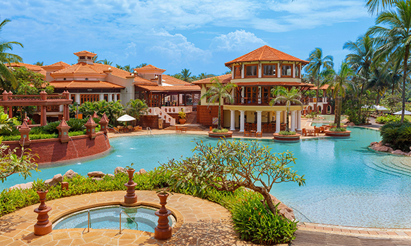
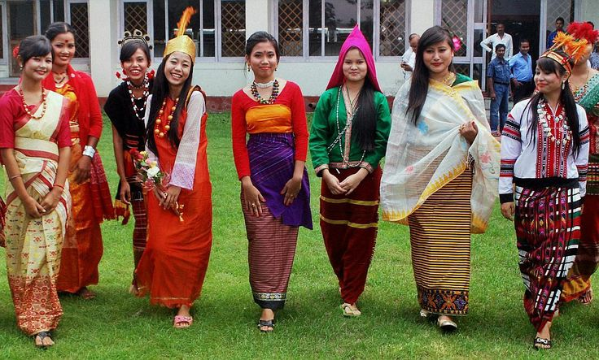
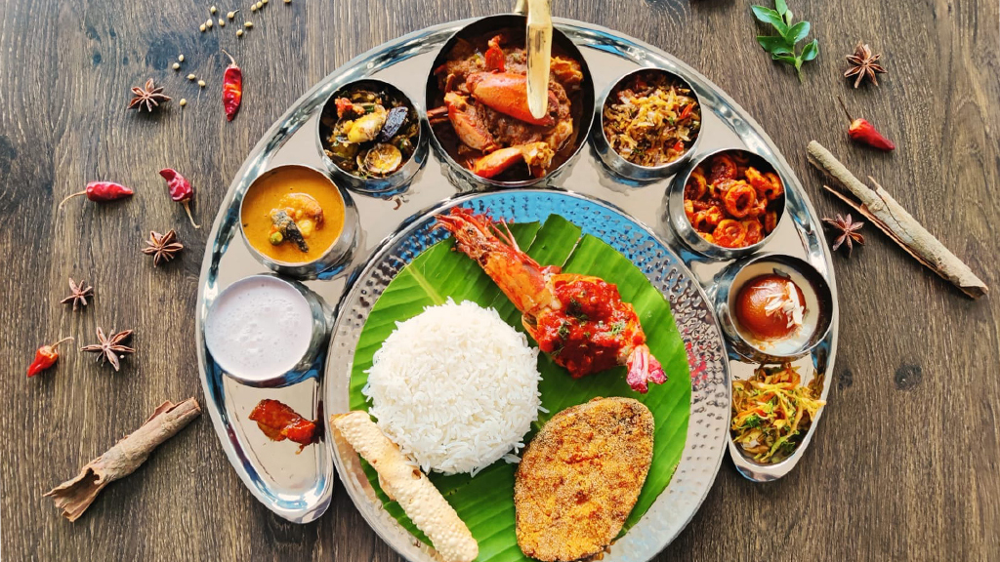
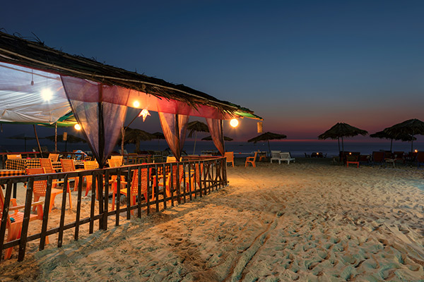

╰┈➤Goa Information
| ✧ Aspect | Information |
|---|---|
| ✧ Capital | Panaji |
| ✧ Chief minister | Pramod Sawant |
| ✧ Largest City | Vasco da Gama |
| ✧ Districts | 2 |
| ✧ Official Language | Konkani |
| ✧ Other Languages | Marathi, Hindi, English |
| ✧ Population | Approximately 1.5 million |
| ✧ Area | 3,702 square kilometers |
| ✧ Major Rivers | Mandovi, Zuari, Terekhol |
| ✧ Major Industries | Tourism, Mining, Fishing |
| ✧ Popular Places | Baga Beach, Calangute Beach, Fort Aguada, Dudhsagar Falls, Basilica of Bom Jesus |
╰┈➤ Traditional dresses of Goa
The traditional attire of Goa reflects its blend of Indian and Portuguese influences. For women, it includes the Kunbi saree and the Pano Bhaju pavada. Men often wear the traditional dhoti and kurta, along with the Goan pano bhaju. Footwear typically consists of leather sandals known as Chappals.
╰┈➤History of Goa
Goa, located on the western coast of India, has a rich and diverse history that spans over millennia. The region has been inhabited since ancient times, with evidence of human presence dating back to the Paleolithic era. Over the centuries, Goa has witnessed the rule of various dynasties, empires, and colonial powers, each leaving their indelible mark on its cultural fabric.
One of the earliest known dynasties to rule over Goa was the Mauryan Empire in the 3rd century BCE. However, it was during the rule of the Kadamba dynasty from the 10th to the 14th century CE that Goa emerged as a prominent center of trade and culture in the region. The Kadambas were succeeded by the Vijayanagara Empire, which further contributed to the flourishing of art, architecture, and literature in Goa.
In the early 16th century, the Portuguese arrived in Goa, marking the beginning of over four centuries of colonial rule. In 1510, Afonso de Albuquerque captured Goa from the Bijapur Sultanate, establishing Portuguese control over the region. Under Portuguese rule, Goa became the capital of Portuguese India and a hub of trade, attracting merchants from Europe, Africa, and Asia.
The Portuguese influence left an indelible mark on Goan culture, architecture, and cuisine. The introduction of Christianity by Portuguese missionaries led to the conversion of a significant portion of the population. Goa also became known for its unique blend of Indian and Portuguese traditions, reflected in its music, dance, and festivals.
In 1961, India annexed Goa from Portuguese rule after a brief but intense military campaign. The annexation marked the end of colonial rule in Goa and its integration into the Indian union as a union territory. Subsequently, Goa attained statehood in 1987, becoming the 25th state of the Indian Republic.
Since gaining independence, Goa has transformed into a popular tourist destination renowned for its pristine beaches, vibrant nightlife, and rich cultural heritage. Despite the modernization and influx of tourists, Goa has managed to preserve its unique identity, reflecting its rich tapestry of history and tradition. Today, it stands as a testament to the resilience and adaptability of its people, who have embraced the challenges of change while holding onto the essence of their heritage.
Thank you
╰┈➤Goa Pictures




